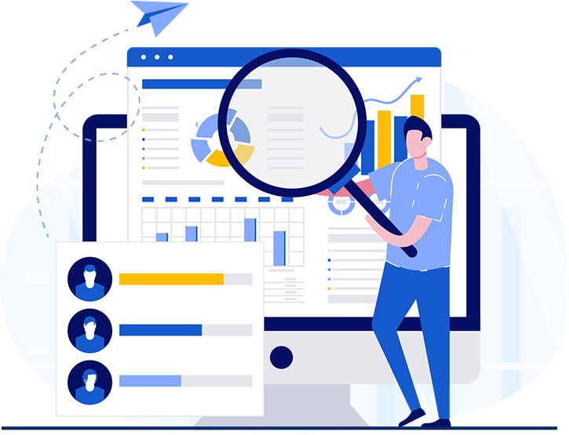

AI is becoming your first impression.
We help founders, lawyers, consultants, and executives improve how AI platforms understand their expertise.
Request an AI Reputation AuditExpert Index insight Clarity for AI platforms No commitment
A practical framework for AI reputation.
Expert Index studies how AI systems interpret professional credibility, then helps strengthen the signals that matter.
-
AI Reputation Audit
A focused review of how AI platforms currently describe your expertise.
-
Digital Authority Strategy
A plan for improving the public evidence AI systems rely on.
-
AI Visibility Optimization
Clearer positioning across the sources that shape AI responses.
-
Ongoing Monitoring
Periodic reviews as AI platforms refresh their understanding.
AI discoverability intelligence
Your expertise deserves to be understood correctly.
Most professionals optimize for search engines. Few optimize for AI. Expert Index helps you understand what AI systems infer from your public footprint and where the story needs correction.

Why AI first impressions matter
AI platforms already summarize your work before a founder, investor, or client reaches out. That summary sets the tone.
How we shape that story
-
We map the signals that tell AI who you are and what you do.
-
We refine those signals so AI can represent your expertise accurately and with confidence.
Expert Index framework
A clear method for measuring AI visibility.
-
Expert Index Audit
Review the current AI narrative around your expertise.
-
Signal Mapping
Identify the public signals shaping that narrative.
-
Profile Review
Assess the evidence AI uses to evaluate your presence.
-
Authority Signals
Strengthen the cues AI trusts when forming recommendations.
-
Visibility Plan
Build a practical strategy for a clearer AI presence.
-
Ongoing Tracking
Monitor changes as AI platforms refresh their models.
Measure what matters
Your Expert Index reflects how AI understands your expertise.
A compact framework for professionals who want AI to represent their work accurately, confidently, and clearly.
Frequently asked questions
What does AI think about you?
-
How does AI form a first impression?
AI platforms collect signals from your public profile, published work, and online mentions. That creates a summary of your expertise.
-
Why is AI reputation different from SEO?
SEO focuses on ranking in search results. GEO — Generative Engine Optimization — focuses on whether AI models like ChatGPT, Perplexity, and Claude understand who you are and what you offer. The signals are different. So is the strategy.
-
Can this work with my existing website?
-
Yes. We assess your current digital footprint and align it with the signals AI uses.
-
The goal is to make your expertise easier for AI systems to read, not to rebuild your brand.
-
-
What should I expect from an Expert Index audit?
You receive a clear report on how AI currently describes your expertise and where the gaps appear.
-
How do you protect my professional information?
We work with the public information you already own and focus on improving the accuracy of AI signals.
No proprietary data is required to begin the review.
-
How often should I review my AI presence?
-
AI platforms update regularly. A review every quarter helps keep your profile current.
-
Consistent monitoring prevents small inaccuracies from becoming lasting misconceptions.
-
Contact
Let’s make sure AI tells the right story about you.
For audit requests, research questions, or a private discussion about AI visibility, contact Expert Index directly.